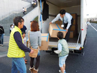
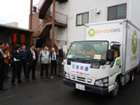
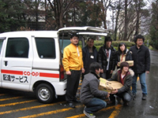

東北地方太平洋沖地震に対する被災地支援について
この度の東北地方太平洋沖地震で甚大な被害が発生し、被災された皆さまに心よりお見舞い申し上げます。1日も早い復興を祈念しますと同時に、埼玉県生協連としてもできる限りの支援等、協力を進めたいと思います。
なお、埼玉県生協連としても、会員生協間との連携を強め、また、各会員生協でも組合員募金、人的支援などを進めています。
埼玉県生協連と会員生協は、全国の生協と力を合わせて、被災地復興にあたり支援を進めていきます。
●会員生協の取り組み（3/20 発行県生協連第6報から）
|  |
| さいたまコープからマスク10万枚をボランティアにお渡しました |
☆さいたまコープ・コープネット
19日、埼玉県から緊急物資の要請(昨日の第4報)に応え、毛布・マスク・ウェットティッシュ・菓子パン・バナナ・飲料をお届けしました。
20日、LLパン(天然酵母パン北海道クリーム)他3～5種類7,680個お届け予定。
21日24日、26日にもお届けします。また、炊き出しの豚汁の肉100kgも提供予定。
☆医療生協さいたま
- スーパーアリーナで看護師の医療支援を開始（19日～29日まで）しました。
- 3月22日NHKさいたまより「軽油不足が医療行為に与える影響とは」テーマに取材がありました。
- 上福岡協同診療所
大人用紙おむつ26袋！！(1袋12枚入り) 上診に上福岡中央支部支部長さんが持参しました。また、支部でも上福岡駅に立ち、街頭募金行動をしようと今、準備しています。
- かすかべ生協診療所
ダンボールで衣類・タオル・毛布大人用紙おむつなどが続々と寄せられています。
昨日の支部長会議の時に、東日本大震災による被災者救援をよびかけた所、各支部から支援物資・カンパが寄せられています。
●会員生協の取り組み（3/23発行 県生協連第7報から）
|  |
さいたまコープからみやぎ生協に向け2人が出発 |
☆さいたまコープ・コープネット
- さいたまコープでは、みやぎ生協の復旧支援に5台10人を予定。3月21日、第1陣の1台2人が大宮本部から出発しました。3月23日、第2陣として2台4人が出発します。車両は、埼玉県に事前登録してあり、埼玉県より緊急通行許可書の交付を受けました。
- コープネットでは、引き続き23日までバナナ20ケースをスーパーアリーナにお届けしています。
|  |
おにぎりを500個をボランティアにお渡ししました |
☆大学生協
- 全国の大学生協で3月14日から救援募金活動を開始しています。埼玉大学生協では、北浦和駅頭で3月24日～26日の3日間、生協学生委員による募金活動に取り組みます。
- 埼玉大学生協では、県の要請に応え3月21日から31日まで500個のあたたかいおにぎりを作り、さいたまスーパーアリーナへのお届けはさいたまコープでしています。
☆医療生協さいたま
- 生協間の連携として、コープネット事業連合より現地に送るマスク5万枚が届きました。